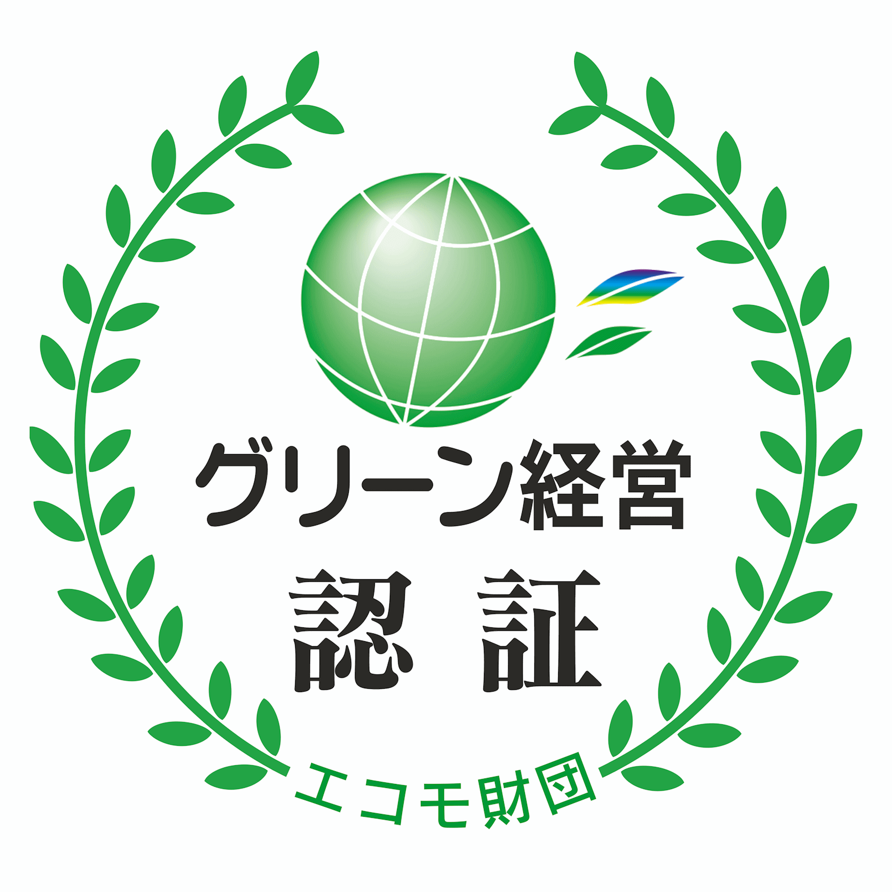

Green Management
グリーン経営認証取得
地球温暖化問題が深刻化している昨今、企業の社会的責任として、当社はグリーン経営の実践に取り組むことで環境に配慮した経営を推し進めています。グリーン経営取得の効果として、燃料削減・事故削減・職場の活性化・従業員の士気向上などさまざまな効果が得られました。
グリーン経営認証制度とは、交通エコロジー・モビリティ財団（国土交通省、社団法人トラック協会、日本財団からの助成金を受けて創設）が認証機関となり、一定レベル以上の環境保全活動に取り組んでいるかを審査し、認証される制度のことです。
交通エコロジー・モビリティ財団